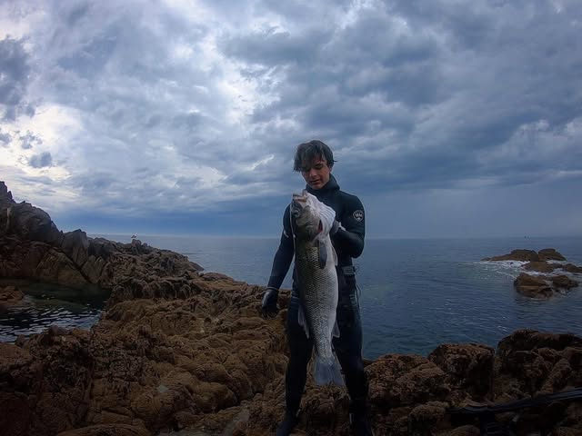

Mon histoire
Une passion née en apnée
Tout a commencé au large des côtes bretonnes, un masque sur le visage et un fusil à la main, dans une eau froide qui ne pardonne rien. La chasse sous-marine, ce n'est pas seulement traquer un poisson : c'est apprendre à retenir son souffle, à lire les courants, les marées et les postes où la vie sous-marine se cache.
« Le même émerveillement à chaque sortie : évoluer, en apnée, dans un monde qui n'est pas le nôtre. »
Entre Belle-Île et le Morbihan, chaque sortie est une nouvelle histoire. Certaines finissent bredouilles, d'autres se terminent avec un bar de plus de 6 kg remonté après de longues minutes d'affût. Ce site est né de l'envie de partager cette passion — les images, les prises, et surtout le respect que cette pratique impose face à l'océan.